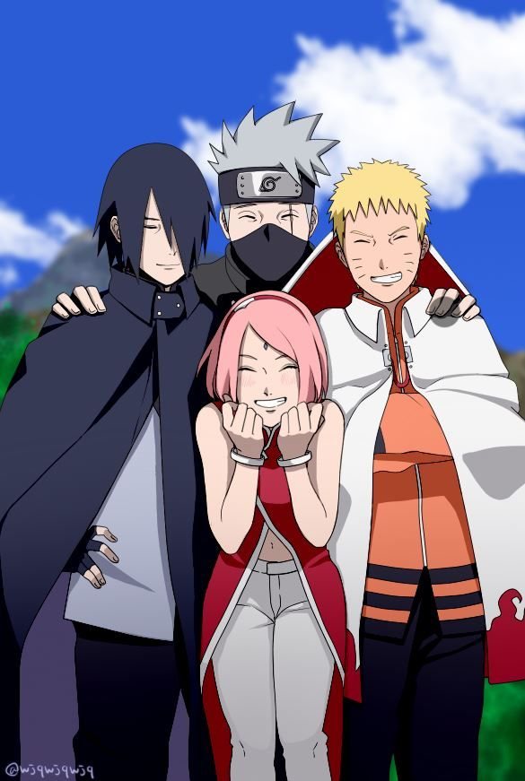

SAKURA HARUNO
Sakura adalah anak tunggal Mebuki dan Kizashi Haruno. Dia memiliki masa kecil biasa, dibesarkan oleh orang tuanya tanpa tragedi atau desas-desus serius. Saat memasuki Akademi Ninja Konoha, beberapa gadis di kelas mulai mengejeknya karena dahi lebarnya. Sakura mencoba untuk melawan ejekan mereka dengan menyembunyikan dahinya dengan poni, tapi ini membuktikan pada gadis-gadis lain bahwa hal itu mengganggu dan menyebabkan mereka semakin mengejeknya. Ino Yamanaka, salah satu teman sekelasnya, melihat ini, membela Sakura dari pengganggu, dan mendorongnya untuk memperlihatkan dahinya dan bukan menyembunyikannya.Selama tahun-tahun berikutnya, bimbingan dan pertemanan dengan Ino membantu Sakura merasa nyaman dengan dirinya sendiri dan berkembang menjadi dirinya sendiri. Meskipun dia merasa berhutang budi kepada Ino karena membantunya, Sakura mulai merasa bahwa dia tinggal di bawah bayang-bayang Ino, sehingga, ingin menjadi sama dengan Ino. Pada suatu saat setelah dia masuk di Akademi, Sakura bertemu Sasuke Uchiha dan naksir pada dia. Ketika Sakura memberi tahu teman-temannya, dia terkejut saat mengetahui betapa populernya Sasuke dengan gadis-gadis lain. Sakura mendengar desas-desus tentang Sasuke yang tertarik pada gadis-gadis dengan rambut panjang dan dia mulai membiarkan rambutnya tumbuh untuk menarik perhatiannya. Beberapa tahun kemudian, saat dia tahu Ino naksir Sasuke, Sakura mengakhiri persahabatan mereka sehingga mereka bisa bersaing memperebutkan cinta Sasuke, dan memulai persaingan sengit di antara mereka. Dalam anime, Sakura mendekati Ino, menceritakan padanya tentang kecintaannya terhadap Sasuke. Ino menjadikan ini alasan untuk mengakhiri persahabatan mereka, memulai ketidaksukaan mereka terhadap satu sama lain di awal seri.[10] Ketika Sakura pertama kali mencoba mengaku pada Sasuke, dia menolaknya karena dia tidak mengenalnya dan Sakura pun melarikan diri karena frustrasi dan malu. Sakura melepaskan ketidaksenangan karena penolakannya dengan meninju pohon dan menyebabkan Sakura dalam dirinya lahir.